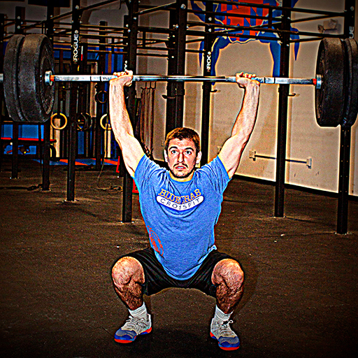
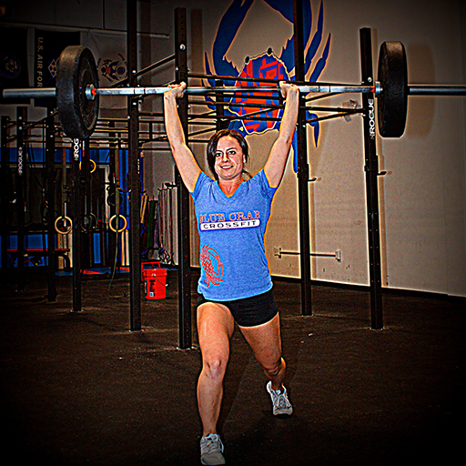
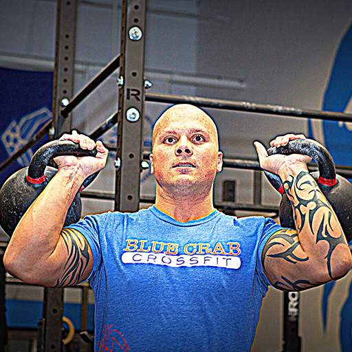
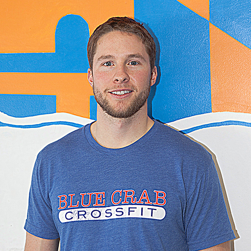
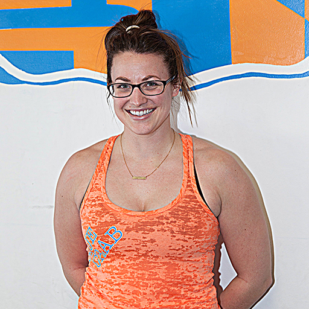
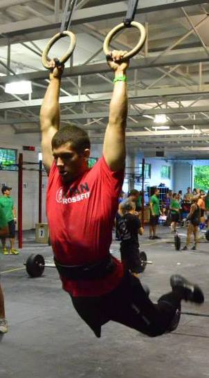
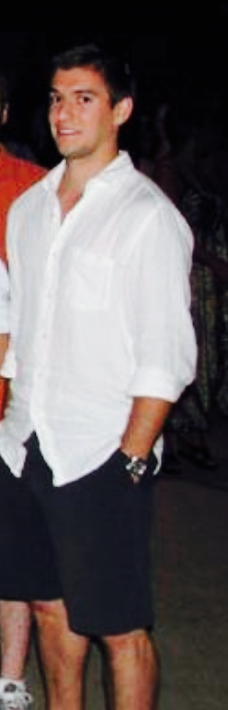
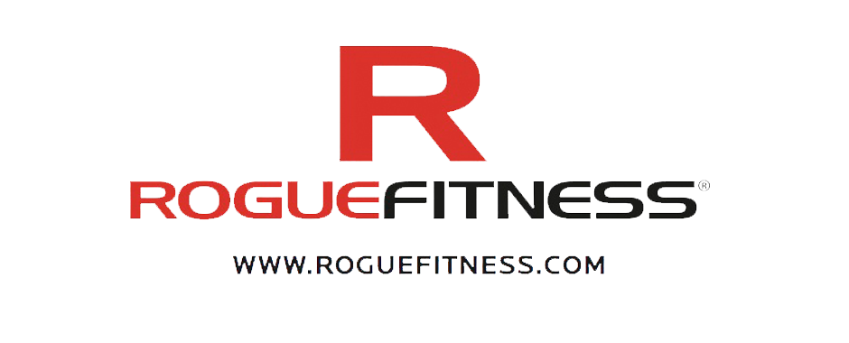

<section id="content" class="content-section">
	<div class="container" ng-controller="aboutController">
		<div id="ContentArea">
			<section id="about-us">
				<section id="coaches">
					<h1>COACHES</h1>

					<div class="container">
						<div class="row">
							<div class="col-md-6">
								
								<h2>Josh Burford</h2>
								<p>Josh is a Maryland native who began his professional
									career in the fitness industry in 2006 working with elementary
									to collegiate level athletes. In 2007 he became an NSPA CPT and
									began developing individualized strength and conditioning
									programs and boot camps for clients of all fitness levels. In
									2011 a friend recommended giving CrossFit a chance. He began
									training at CrossFit Diesel and was truly introduced to the
									sport of fitness. After working out at this CrossFit facility
									for 6 months he began building a garage gym in his parents
									barn. It wasnt until he came across a video on CrossFit.com
									(Hope for Kenya) that he realized he could influence not only
									athletes but the surroundings community in a positive way. He
									completed his CrossFit CFL1 trainer course in April of 2013. He
									was welcomed by CrossFit Titan to shadow some amazing coaches
									to help hone his skills and take his coaching to the next
									level.</p>

								<p>
									<a class="btn btn-default" href="#" role="button">View
										details »</a>
								</p>
							</div>
							<div class="col-md-6">
								
								<h2>Ben Dziwulski</h2>
								<p>Ben is a Maryland native who started doing CrossFit his
									Freshman year at North Carolina State University. After a
									couple years of trying to do CrossFit on his own, he found his
									home at Raleigh’s premier CrossFit gym, CrossFit Invoke, where
									he learned under CrossFit Headquarter Trainer, Christmas
									Abbott. After completing his CFL1 Trainer Course, he became a
									coach at Invoke. Since then, he has been coaching and competing
									for a couple years, trying to become a better coach each day.
									After graduating from college and moving back to Maryland, he
									was given the opportunity to coach at Titan CrossFit in
									Timonium, MD, where he learned even more about proper coaching,
									programming, and gym management from a fantastic group of
									people.</p>

								<p>Since starting BCCF, he has since moved on to live with
									his new bride, Shelby, who is in the Navy. Although he might
									not be in the gym physically, his influence is still felt
									throughout the culture and environment. Also, he loves to keep
									everyone in the loop with his weekly motivational BCCF email
									updates!</p>

								<p>
									<a class="btn btn-default" href="#" role="button">View
										details »</a>
								</p>
							</div>

						</div>
						<div class="row">
							<div class="col-md-6">
								
								<h2>Dallas Burford</h2>
								<p>Dallas is a native to Maryland that started doing
									CrossFit in the the summer of 2013. After dabbling around with
									Crossfit for about a year he decided it was time to get serious
									with it.Not knowing much of anything, he took the time to learn
									everything that Josh and Ben could possibly teach him. After
									months of studying, learning all the ins and outs, he got his
									level one Certification at Fed Hill CrossFit. Since then Dallas
									has been one of the head coaches at Blue Crab CrossFit.
									Pursuing his passion, constantly coaching, training, and
									studying learning to make himself and to make the coaches
									around him better everyday.</p>
								<p>
									<a class="btn btn-default" href="#" role="button">View
										details »</a>
								</p>
							</div>
							<div class="col-md-6">
								
								<h2>Kortney Dwyer</h2>
								<p>After playing DI lacrosse at Towson University Kortney
									was looking for a new challenge. She began CrossFit in early
									2012 in her hometown of Baltimore, MD. She received her CFL1
									certificate a year later and has been active in the crossfit
									community ever since. After receiving her USAW L1 certification
									she turned her focus to Olympic lifting- directing the barbell
									club at her respective gym. She has worked with established
									USAW coaches in the Baltimore area gaining experience coaching
									and competing as an Olympic lifter. She bring her skill set and
									knowledge to all clients to help them achieve their goals and
									continue learning and developing herself as a CrossFit coach
									and athlete.</p>
								<p>
									<a class="btn btn-default" href="#" role="button">View
										details »</a>
								</p>
							</div>
						</div>
						<div class="row">
							<div class="col-md-6">
								
								<h2>Aaron Lepsch</h2>
								<p>Aaron was born/raised in Buffalo, NY but spent College
									and most of his adult life in Columbus, OH. He moved to
									Maryland in 2012 to work at NASA as a Sr. Systems Administrator
									/ Technical Director. His love for Health & Fitness is as
									strong as his passion for Technology. Aaron worked as a
									personal trainer while in College. When he moved to MD he was
									fed up with the "Globo Gym" atmosphere and needed a change. He
									met Ben & Josh a few weeks prior to Blue Crab CF opening their
									doors and the rest is history.</p>
								<p>
									<a class="btn btn-default" href="#" role="button">View
										details »</a>
								</p>
							</div>
							<div class="col-md-6">
								
								<h2>Brett Costantino</h2>
								<p>Brett started doing CrossFit unofficially in 2010 when he
									was preparing to go to Officer Candidate School for the Marine
									Corps. He found that the style of training and mentality of
									CrossFit helped him succeed and become a Marine Officer in
									2011. Since then Brett has used CrossFit programming to train
									his Marine's for deployment and keep them focused on missions
									while in remote areas of Africa. Brett has been a part of the
									Blue Crab CrossFit family since January 2014 and has learned a
									great deal about the dynamics of coaching from Ben and Josh.</p>
								<p>
									<a class="btn btn-default" href="#" role="button">View
										details »</a>
								</p>
							</div>
						</div>
						<div class="row">
							<div class="col-md-6">
								
								<h2>Christina Orcino</h2>
								<p>Christina is a Maryland native who has known Coach Ben
									since freshman year science class in high school :). She played
									soccer her entire life and discovered CrossFit while she was
									attending East Carolina University (Go Pirates). Starting out
									as an Olympic weightlifter, she was a member of the ECU
									Weightlifting team before transitioning into CrossFit.
									Christina earned her Master's degree in Exercise Physiology
									from ECU after graduating with her Bachelor's in Exercise
									Science from Salisbury University. Throughout all of her stints
									with Olympic lifting, powerlifting, Strongman and CrossFit, she
									learned the value of mobility work and how it improves her
									performance and keeps her injury free.</p>
								<p>
									<a class="btn btn-default" href="#" role="button">View
										details »</a>
								</p>
							</div>
							<!-- <div class="col-md-6">
										
										<h2>Ryan Farrall</h2>
										<p>Ryan was originally born in Seattle (Go Seahawks) but
											moved to Columbia at the age of 10. Ryan was first introduced
											to CrossFit during his junior year of high school when he
											joined the wrestling team. Turned out that the team's
											conditioning consisted solely of CrossFit. He fell in love.
											Since that day in 2011, Ryan has always done a little
											CrossFit here, or a little CrossFit there, but to his dismay,
											nothing terribly consistent. That is when he was given the
											chance to join the family here at Blue Crab CrossFit. He
											started training with Ben, Josh, Dallas, and Kortney months
											ago, and hasn't looked back yet. He continually looks forward
											to improving himself and those around him.</p>
										<p>
											<a class="btn btn-default" href="#" role="button">View
												details »</a>
										</p>
									</div> -->
						</div>
					</div>

					<!-- <h3>Ben Dziwulski</h3>

							</img> <br />

							<p>Ben is a Maryland native that started doing CrossFit his
								Freshman year at North Carolina State University. After a couple
								years of trying to do CrossFit on his own, he found his home at
								Raleigh’s premier CrossFit gym, CrossFit Invoke, where he
								learned under CrossFit Headquarter Trainer, Christmas Abbott.
								After completing his CFL1 Trainer Course, he became a coach at
								Invoke. Since then, he has been coaching and competing for a
								couple years, trying to become a better coach each day. After
								graduating from college and moving back to Maryland, he was
								given the opportunity to coach at Titan CrossFit in Timonium,
								MD, where he learned even more about proper coaching,
								programming, and gym management from a fantastic group of
								people.</p>

							<h4>Current Courses/accreditations</h4>
							<p>CrossFit CFL1 Trainer Course</p>
							<p>CrossFit Coach’s Prep Course</p>
							<p>CrossFit Judge’s Course</p>
							<p>CFW Olympic Lifting Course</p>
							<h4>Favorite thing about CrossFit</h4>
							<p>"I love watching people exceed their own expectations.
								Whether it is getting their first pullup, muscle up, or being
								able to walk up the stairs without getting winded. CrossFit
								enables us to use our bodies the way that God intended them- as
								perfect machines that he designed."</p>
							<h4>Favorite quote:</h4>
							<p>"He is above all things and in him all things hold
								together.” Colossians 1:17</p>
							<br />
							<h3>Josh Burford</h3>
							</img>
							<br />

							<p>Josh Burford is a Maryland native that began his
								professional career in the fitness industry in 2006 working with
								elementary to collegiate level athletes. In 2007 he became an
								NSPA CPT and began developing individualized strength and
								conditioning programs and bootcamps for clients of all fitness
								levels. In 2011 a friend recommended giving CrossFit a chance.
								He began training at CrossFit Diesel and was truly introduced to
								the sport of fitness. After working out at this CrossFit
								facility for 6 months he began building a garage gym in his
								parents barn. It wasnt until he came across a video on
								CrossFit.com (Hope for Kenya) that he realized he could
								influence not only athletes but the surroundings community in a
								positive way. He completed his CrossFit CFL1 trainer course in
								April of 2013. He was welcomed by CrossFit Titan to shadow some
								amazing coaches to help hone his skills and take his coaching to
								the next level.</p>

							<h4>Current Courses/Accreditation</h4>

							<p>CrossFit CFL1 Trainer Course</p>
							<p>NutraMetrix NC</p>

							<h4>Favorite Thing About CrossFit</h4>
							<p>Watching people better themselves, and watching the
								CrossFit community reach outside the walls of the gym to help
								make a difference.</p>
							<br /> -->
				</section>

				<section id="facility" class="sub">
					<h2>FACILITY</h2>

					<h3>Equipment</h3>

					<div class="col-md-6 md-margin-bottom-40">
						<a href="/images/barbell.jpg"> 
						</a>
					</div>
					<div class="col-md-6 md-margin-bottom-40">
						<a href="/images/weights1.jpg"> 
						</a>
					</div>
					<div style="width: 960px; height: 20px; clear: both"></div>
					<a href='http://www.roguefitness.com/' target='_blank'> 
					</a>
					<p>Rogue Fitness makes top-of-the line, 100% American Made,
						fitness equipment and is the ONLY choice for the Reebok CrossFit
						Games. We appreciate quality, and have outfitted the gym to last!
						As we grow, so will our equipment, including sleds, logs, tires,
						and all kinds of fun workout items!</p>
					<p>Here is a list of gear (Ben calls them toys) that we already
						have and/or will be adding soon!</p>

					<p>Rogue Barbells (Mens, Womens, 15lb Trainers)</p>
					<p>Rogue Hi-Temp Bumper Plates</p>
					<p>Rogue Infinity Pullup Rig</p>
					<p>Rogue Squat Racks</p>
					<p>Rogue Kettlebells (18lb-70lb)</p>
					<p>Rogue Speed Jumpropes</p>
					<p>Rogue Elastic Bands</p>
					<p>Plyo Boxes</p>
					<p>Gymnastic Rings</p>
					<p>Climbing Rope</p>
					<p>Dedicated Olympic Lifting Platform</p>
					<p>Concept 2 Rowers</p>
					<p>Dynamax Medicine Balls (8lb-30lb)</p>

					<a href="http://www.wodify.com/" target="_blank"> 
					</a>
					<p>Wodify is an incredible software that makes everything in
						CrossFit seamless. From workout tracking, nutrition logging, and
						membership services- Wodify does it all. You will never have to
						guess what your old Back Squat "PR" is again- it will be right at
						your fingertips electronically via any smartphone (via Wodify App)
						or computer. With our in-house kiosk, you will be able to sign-in,
						record data, and track your friends' scores all with a few mouse
						clicks. Even better, Wodify comes with you via their smart phone
						application. The team here at Blue Crab CrossFit is absolutely
						STOKED to put this service to use, because ultimately it will make
						YOU- our athlete- better!</p>
				</section>

				<section id="rules" class="sub">
					<h2>GYM RULES</h2>

					<p>1. Stay humble. Leave your ego at the door.</p>
					<p>2. Clean up! Leave things like you found them.</p>
					<p>3. Don’t clean up until the last person is finished! Cheer
						them on.</p>
					<p>4. Introduce yourself, we are all family here.</p>
					<p>5. NEVER drop an empty barbell.</p>
					<p>6. No Steelers fans.</p>
					<p>7. ALWAYS GIVE 100% EFFORT. Effort=results.</p>
					<p>8. Please shower daily</p>
					<p>9. Use deodorant</p>
					<p>10. HAVE FUN!</p>
					<p>76. No excuses, play like a champion.</p>
				</section>
			</section>
		</div>
	</div>
</section>
